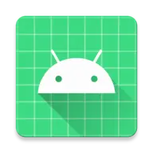

Projekty
ImageSafe – bezpieczny sejf na zdjęcia.

Program polega na wybraniu zdjęć, które chcemy ukryć przed niepowołanym dostępem i umieszczeniu ich w specjalnym sejfie chronionym hasłem. Wybrane obrazy są zabezpieczone szyfrem XOR, dzięki czemu bez aplikacji i bez zalogowania nie ma możliwości zobaczenia tych zdjęć.
 GitHub
GitHubAppMaster – aplikacja syntetyzująca wcześniejsze projekty.
Projekt miał za zadanie połączenie wszystkich małych projektów w jeden duży. Otrzymał dodatkowe funkcjonalności. Wśród nich można wymienić obliczanie średniej arytmetycznej, rzeczy związanymi z funkcją liniową i kwadratową, systemami liczbowymi, generowaniem liczb, dzieleniem sieci na podsieci, szyfrowaniem tekstu, grą w zgadywanie liczb, alfabetem z „Gwiezdnych wojen” oraz planowanym przysyłaniem powiadomień.
InteligentMirror – aplikacja zarządzająca Inteligentnym Lustrem.
Aplikacja przeznaczona jest do zarządzania Inteligentnym Lustrem. W projekcie tym jest wykorzystana baza danych MySQL oraz serwer FTP, przez co mamy możliwość tworzenia konta, przesyłania i pobierania zdjęć, przekazywania danych logowania i zarządzania wirtualną myszą. Webmirror to aplikacja internetowa pełniąca podobne funkcje do aplikacji mobilnej.
Vitrum – aplikacja do współpracy obywatele-samorząd.
Zadaniem aplikacji jest zgłaszanie różnych propozycji dotyczących zmian na terenie zamieszkania np. gmina lub powiat. Oprócz tego można zobaczyć propozycje innych ludzi, zareagować na nie, skomentować, zasugerować, stworzyć dyskusje. W ten sposób ludzie widzą wzajemnie jakie idee mają poparcie, jak bardzo są potrzebne oraz na odwrót — skrytykować bezsensowne wydatki i głupie inwestycje.Rozwiązanie takie jest dużo prostsze niż tworzenie petycji, zbieranie podpisów chodząc od drzwi do drzwi, a także co najważniejsze — nasze pomysły mogą pójść w świat i zmieniać otoczenie.
Sasinomierz – aplikacja zamieniająca podaną wartość na wielokrotności sasinów.
W czasach gdy internet zdominował mem o Sasinie, potrzebne było eleganckie narzędzie do sprawnej zamiany wartości liczbowych. Działanie jest banalnie proste – wpisujemy liczbę i dostajemy wynik.
SchizoBasedApp – quiz ze znajomości memów.
Aplikacja ta jest grą logiczną, która oparta jest o memy. Konieczne jest rozeznanie w tych sprawach, by móc przejść tę grę.